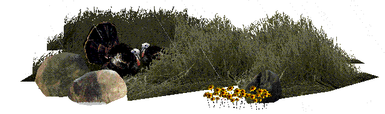
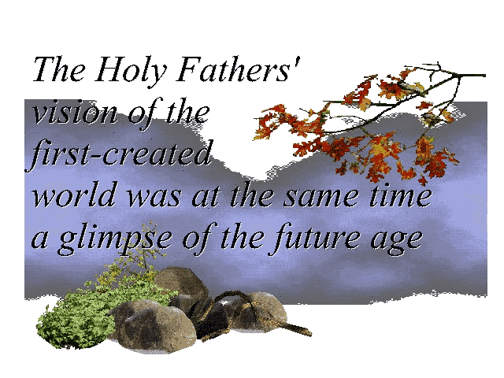
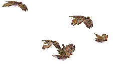

Project Aim
“So, icons are God-bearing pieces of creation, a creation made by God in the first place but somehow tainted, its spiritual quality made less obvious through the great tragedy we call the Fall. However, since God became man, this same material, through the work of the forester, the carpenter, the paint-maker, and eventually the icon painter, is returned to the fullness of its spiritual origins in a way most of the stuff that surrounds us is not. Icons are Spirit-bearing in a way that, for example, automobiles cannot be (at least not yet).”
- Archimandrite Meletios Webber, “Bread & Water, Wine & Oil” p. 105
Big Buck Hunter: Restoration cannot achieve the fullness of restoration that icons manifest, but the aim of this project is to reflect, however imperfectly, the beginnings of such restoration. This work is not the creation of something entirely new, since the original game precedes it, but rather a re-planting of the garden of Big Buck Hunter—removing death and violence, changing the linear flow of the original game into a cyclical and unending one, and repositioning trees and plants, transforming the landscapes to serve the animals instead of the player. It is an effort to reflect the transfiguration of creation through Christ’s death and resurrection.
It is no coincidence that Mary Magdalene, the first to see the risen Christ, initially mistook Him for a gardener. On this connection, G.K. Chesterton writes:
“On the third day, the friends of Christ coming at day-break to the place found the grave empty and the stone rolled away. In varying ways they realized the new wonder; the world had died in the night. What they were looking at was the first day of a new creation, with a new heaven and a new earth; and in a semblance of a gardener God walked again in the garden, not in the cool of the evening, but in the dawn.”
This project seeks to mirror the restoration of creation, pointing toward the "eighth day"—the day of the new creation already inaugurated by Christ's resurrection. It is a vision of the world healed and transfigured, where creation finds its true purpose, glorifying God and reflecting His Kingdom, fulfilled and made whole.
Drawing on the pre-fall world as a model, Big Buck Hunter: Restoration is connected to the idea that "The Holy Fathers’ vision of the first-created world was at the same time a glimpse of the future age." The harmony and union with God of Eden, disrupted by the Fall, are not merely a lost past but a foretaste of the redeemed and glorified creation yet to come.
In this light, the project does not seek to recreate Eden as it was; it does not make sense to try to “go back to Eden” as God is not in the past, we can only meet Him in the present, but to align the game with the reality that Eden pointed toward: a world healed and transfigured in Christ.
